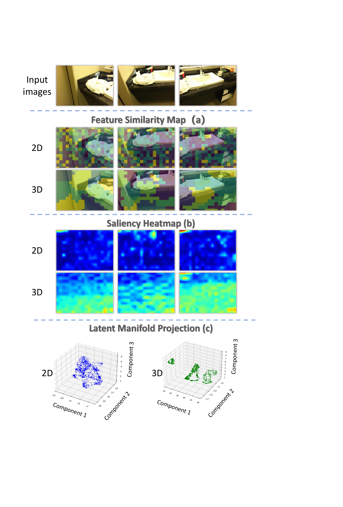
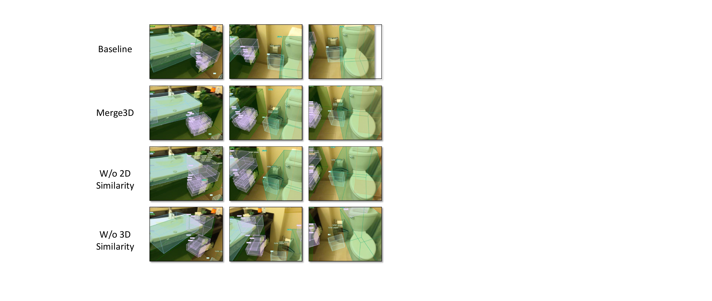

70%
maximum visual token reduction
Project Page
Geometry-aware token compression for dual-encoder 3D video MLLMs.
1National University of Singapore 2The Hong Kong Polytechnic University
This page is styled after the VG-LLM project page, with content adapted to Merge3D.

Overview
Multimodal Large Language Models (MLLMs) with 3D geometry priors show strong capability in 3D scene understanding, but long multi-view visual token sequences make them expensive to run. Merge3D introduces a geometry-aware token merging framework that combines 2D semantic saliency and 3D geometric consistency.
Our Semantic–Geometric Token Merger (SemGeo Merger) uses 2D attention to select dominant tokens, then aggregates contextual tokens with a hybrid 2D+3D similarity. This preserves spatially critical structure and inter-frame correspondences even under aggressive compression.
Merge3D reduces visual tokens by up to 70% and delivers up to ~3.1× faster inference while retaining strong performance on 3D grounding, captioning, and spatial reasoning benchmarks including Scan2Cap, CV-Bench, and BLINK.
maximum visual token reduction
measured end-to-end inference speedup
joint 2D semantic + 3D geometric token merging
grounding, captioning, and spatial reasoning
Method
Merge3D is built on top of a dual-encoder 3D video MLLM. A 2D visual encoder captures semantic detail, while a 3D geometry encoder captures spatial structure and cross-frame correspondence.
Instead of compressing tokens with only semantic similarity, Merge3D first keeps semantically important dominant tokens using 2D attention, then merges remaining contextual tokens according to a hybrid similarity that respects both appearance and geometry.

2D attention identifies dominant tokens with strong semantic saliency.
3D-aware similarity encourages merging within spatially coherent regions.
Geometry and semantics are fused to keep spatial reasoning and grounding robust under compression.
Results
73.4 CIDEr @ 30% tokens
Retains 93.4% of baseline CIDEr while running 2.5× faster.
79.6 avg @ 30% tokens
Preserves about 97.0% of the baseline average accuracy with 70% fewer tokens.
67.5 avg @ 30% tokens
Keeps 98.7% of baseline average performance while strongly reducing compute.
| Model | Retention | C@0.5 | B-4@0.5 | M@0.5 | R@0.5 |
|---|---|---|---|---|---|
| Baseline | 100% | 78.6 | 40.9 | 28.6 | 62.4 |
| Merge3D | 30% | 73.4 | 39.3 | 28.2 | 61.6 |
| Merge3D | 10% | 66.1 | 37.9 | 27.5 | 61.1 |
| Merge3D | 5% | 57.9 | 36.1 | 26.8 | 60.5 |
| Model | Retention | 2D | 3D | Avg. |
|---|---|---|---|---|
| Baseline | 100% | 72.9 | 91.3 | 82.1 |
| Merge3D | 30% | 71.0 | 88.1 | 79.6 |
| Merge3D | 10% | 68.6 | 86.3 | 77.5 |
| Merge3D | 5% | 67.5 | 82.0 | 74.8 |
| Model | Retention | Depth | Spatial | Multi-View | Avg. |
|---|---|---|---|---|---|
| Baseline | 100% | 79.8 | 67.8 | 57.1 | 68.4 |
| Merge3D | 30% | 78.2 | 68.5 | 55.6 | 67.5 |
| Merge3D | 10% | 70.2 | 66.4 | 55.6 | 64.1 |
| Merge3D | 5% | 62.9 | 62.9 | 55.6 | 60.5 |
On CV-Bench at 5% retention, using only 2D similarity gives 72.8 average accuracy, using only 3D similarity gives 72.3, and using both reaches 74.8.
This shows that semantic cues and geometric cues are complementary: 2D similarity helps suppress semantic confusion, while 3D similarity stabilizes localization and cross-view consistency.
| 2D similarity | 3D similarity | 2D | 3D | Avg. |
|---|---|---|---|---|
| ✓ | ✗ | 64.8 | 80.7 | 72.8 |
| ✗ | ✓ | 63.7 | 80.8 | 72.3 |
| ✓ | ✓ | 67.5 | 82.0 | 74.8 |
Visualizations



Citation
@misc{pan2026merge3d,
title = {Merge3D: Efficient 3D Multimodal LLMs via Joint 2D-3D Token Merging},
author = {Tianbo Pan and Xingyi Yang and Xinchao Wang},
year = {2026},
note = {Project page / manuscript}
}